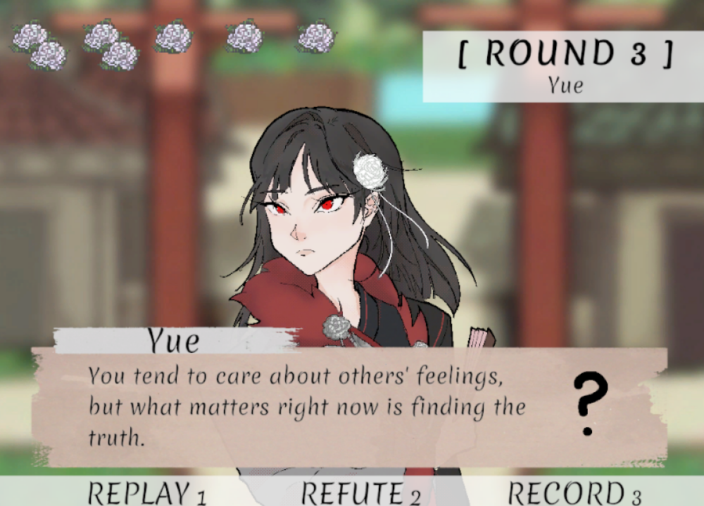
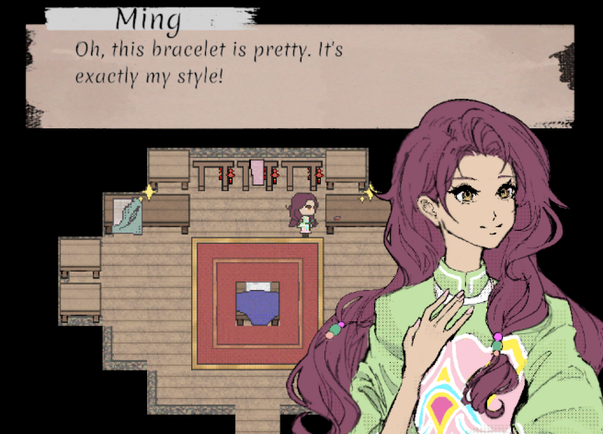
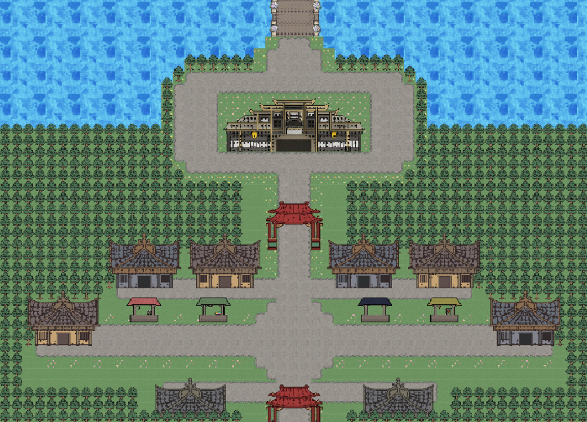

Twilight Tower
It’s a true adventure story to the core: you’re the brave knight scaling towers to save the forlorn princess. Or wait, is it a romantic fairy tale classic where you struggle on your way to finding your knight in shining armor? Well, it’s both actually. Solve puzzles and fight brave battles as you experience what it’s like from both sides of the classic story.
Click here to explore the world of Twilight Tower!
Supported in both PC and mobile browsers (but may need to request the desktop site on mobile). PC browser recommended. Controls: use mouse for everything!
Credits:
Mira Khan (Puzzle Room, Puzzle, Visual Novel & SFX, Game Progression)
Jennifer Truong (Combat Room, Story, Character Art, Background Art)
Samantha Verdi (Combat & SFX, Character Sprites & Animations, Music)
Saniyah Smith (Combat)
Office Escape
A PICO-8 puzzle game where I created everything from the graphics and music to the code. Navigate the office and solve puzzles to escape!
Fatal Flower



set in ancient Asia, [fatal flower] is a 2D narrative-driven murder-mystery RPG that follows the story
of two girls who quickly find themselves caught in a growing web of murder mysteries spreading throughout their town.
our team's passion for the investigative adventure game genre had inspired us to create a murder-mystery game; as such,
there are various topics related to death discussed throughout the plot. for those sensitive to such themes, we recommend checking
the content warnings found at the bottom of this page beforehand.
🌺----------------🌺----------------🌺
development:
[team]
game design and programming: kanmiii
story and script: pooh
character and map art: jani
original soundtrack composition: priv
[software and resources]
created in Unity. uses the Merienda font which is
licensed under the SIL Open Font License (OFL) included in the game files.
🌼----------------🌼----------------🌼
features:
♥ two alternating protagonists ♥
♡ three unique murder mysteries to solve ♡
♥ three fun gameplay modes to enjoy ♥
♡ 24k+ words of dialogue ♡
♥ 11 interesting characters ♥
♡ eight distinct maps ♡
♥ nine original songs ♥
♡ one ending ♡
♥ ~2-3 hours playtime for all three cases ♥
🌺----------------🌺----------------🌺
🎮 Play on itch.io